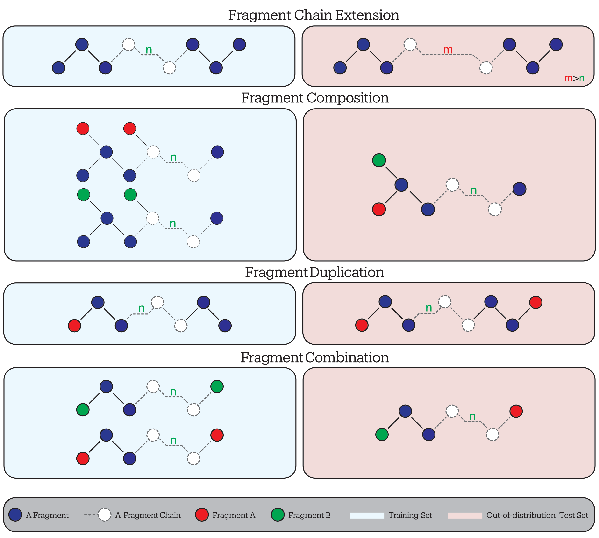
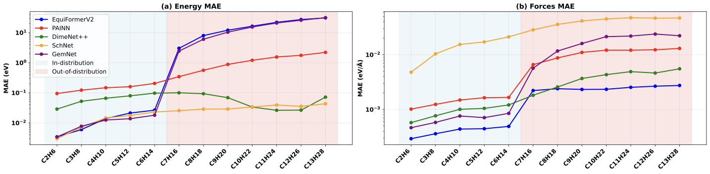

Annual Review 2025 · Cardiff University
Invalid Date
The Current State of MLIPs
Neural potentials, the black-box problem, and systemic extrapolation failure
The Data-Evaluation Paradox
Why standard benchmarks cannot measure generalisation
GMD-26: A Framework for Systematic Evaluation
Our benchmark, four tasks, and key results
The DeepSet-MoE
Proposed architecture for interpretable generalisation
Conclusion & Future Outlook
Key findings and next steps
Neural networks in chemistry can be categorised by their resolution and computational cost:
Force field methods, or Machine-Learned Interatomic Potentials (MLIPs), are currently the most widely adopted approach. They offer an optimal trade-off between computational complexity and predictive accuracy.
Bridging the Gap
Computational Breakthroughs
The shift from fixed descriptors to learnable representations has traded transparency for accuracy, creating a fundamental “Black Box” problem:
1. The Latent Space “Black Box”
2. The Mapping Problem
Because the learned representation is opaque, we cannot define its validity domain. This leads to critical failures that standard metrics fail to detect:
1. The Extrapolation Catastrophe
2. The Evaluation Blind Spot
Existing benchmarks were designed for accuracy — not for probing compositional generalisation.
The field has evolved from small, specific datasets to massive, heterogeneous aggregates:
Trajectories of single small molecules (Ethanol, Aspirin).
Properties for thousands of stable organic molecules.
Huge, heterogeneous collections mixing equilibrium and non-equilibrium data.
Gap: Despite the scale of Category 3, we still lack systematic benchmarks designed to specifically stress-test compositional extrapolation.
While datasets have scaled massively to create “Universal” models, evaluation protocols remain fundamentally flawed:
1. The Scale of Data
Modern efforts aim for universal coverage using massive, heterogeneous aggregates:
2. The Evaluation Deficit
A. The In-Distribution Trap:
B. The “Ineffective” OOD Solution:
The Critical Gap: We lack a metric to measure how far a model can extrapolate. We define OOD loosely (“unseen”), rather than mathematically (“distance from training manifold”).
We introduce GMD-26 not merely as a dataset, but as a flexible Benchmarking Framework designed to rigorously quantify generalisation.
1. The Protocol (Domain-Agnostic)
A systematic structure adaptable to diverse fields (e.g., Polymers, Proteins):
2. Reference Implementation
Validation via Small Organic Molecules:
Goal: To establish a universal standard for auditing model robustness across any chemical domain.

Visual schematic of the four GMD-26 tasks.
Task Definition: Training on molecules with a single fragment A (e.g., Mono-acid) and testing on molecules with two of the same fragment A (e.g., Di-acid).
| Model | Forces MAE | Cosine Sim. | F Mag. MAE | Energy MAE (eV) | ||||
|---|---|---|---|---|---|---|---|---|
| ID | OOD | ID | OOD | ID | OOD | ID | OOD | |
| SchNet | 0.0292 | 0.1143 | 0.9979 | 0.9691 | 0.0307 | 0.1458 | 0.0295 | 29.32 |
| PaiNN | 0.0020 | 0.0600 | 0.9999 | 0.9768 | 0.0022 | 0.0713 | 0.0181 | 30.72 |
| GemNet | 0.0009 | 0.0224 | 0.9999 | 0.9978 | 0.0010 | 0.0223 | 0.0129 | 12.27 |
| EquiFormerV2 | 0.0018 | 0.0538 | 0.9999 | 0.9746 | 0.0019 | 0.0603 | 0.0984 | 133.77 |
| DimeNet++ | 0.0018 | 0.2484 | 0.9999 | 0.9406 | 0.0019 | 0.3863 | 0.0128 | 34.86 |
| MACE | 0.0028 | 0.0171 | 0.9999 | 0.9978 | 0.0030 | 0.0201 | 0.0018 | 40.97 |
| NequIP | 0.0256 | 0.0460 | 0.9984 | 0.9922 | 0.0269 | 0.0501 | 0.0198 | 34.59 |
| Detailed performance metrics on the Fragment Duplication task. Values in red indicate catastrophic OOD failure. | ||||||||

Detailed comparison of predicted vs. actual values. Note the divergence in the OOD regions (right side) compared to the tight correlation in ID regions (left side).
We implement the DeepSet framework (\(E = \rho(\sum \phi)\)), modifying the pipeline to expose interpretability and challenge standard assumptions:
Architecture: Mixture of Experts (MoE) replacing the monolithic network.
Refined Routing Metrics:
Role: Pooling atomic states into a global representation.
Current State:
The Aggregation Hypothesis:
Role: Mapping latent state to Energy/Force.
Inference:
The Diagnosis
We challenged the generalisation capabilities of established SOTA architectures by introducing GMD-26, a benchmark designed to test physical robustness rather than memorisation.
Key Findings:
To bridge this gap, we are moving away from monolithic “Black Box” networks toward a modular, chemically aligned architecture:
1. The DeepSet-MoE Implementation
2. The Aggregation Hypothesis
Final Conclusion: We aim to establish DeepSet-MoE as an explainable architecture where OOD performance remains close to ID levels, prioritising this generalisation stability over chasing the absolute lowest ID errors seen in SOTA models.
Amir Masoud Nourollah
PhD Student · Cardiff NLP & Knowledge Representation and Reasoning Groups
Supervisors: Prof. Stefano Leoni · Prof. Steven Schockaert
📧 NourollahA@cardiff.ac.uk
🌐 nourollah.me
Preprint available at arxiv.org/abs/2605.08988